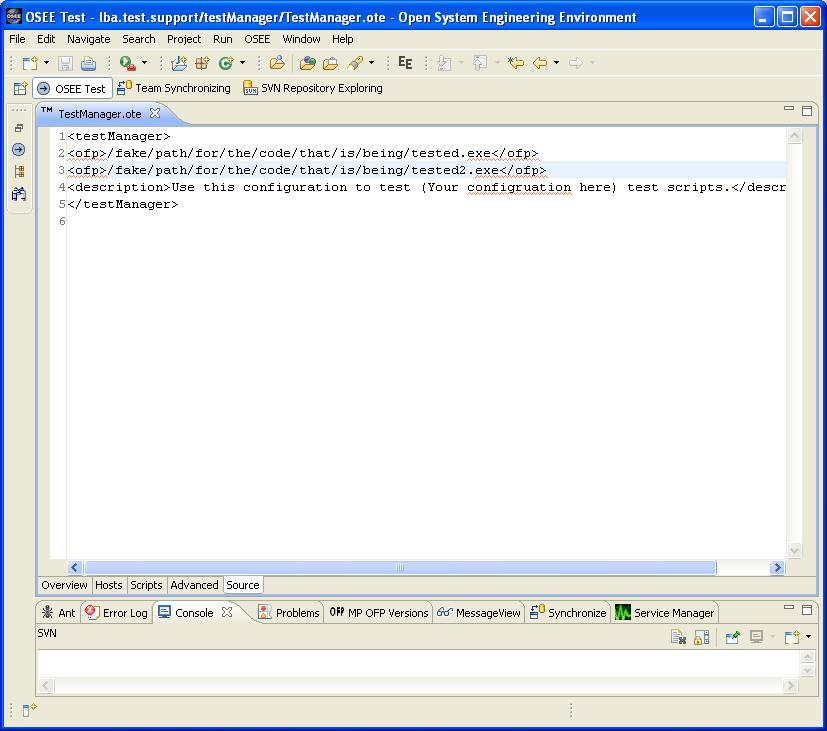

Test Manager Source Page
The Source page of Test Manager allows the user to enter source code location to run against. It also contains the location to place the Description information that shows up on the Overview Page.
